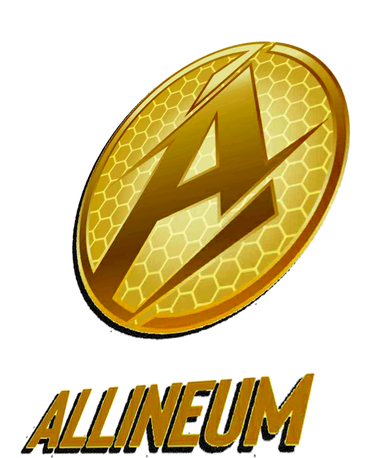

About DC Coin
DC is a charity token with a robust charitable strategy designed to maximize profitability for investors and social impact reach in the world.
Mission
To provide multiple utilities for DC coin holders and make it a native asset that is interoperable across the charity and the social media ecosystem.
Vision
To make a community as strong so that DC coin becomes a buzzword among the charitable fraternity.
How We Help
We've created a platform that helps investors gain long-term financial achievements, make a social impact, and participate in charitable giving.
